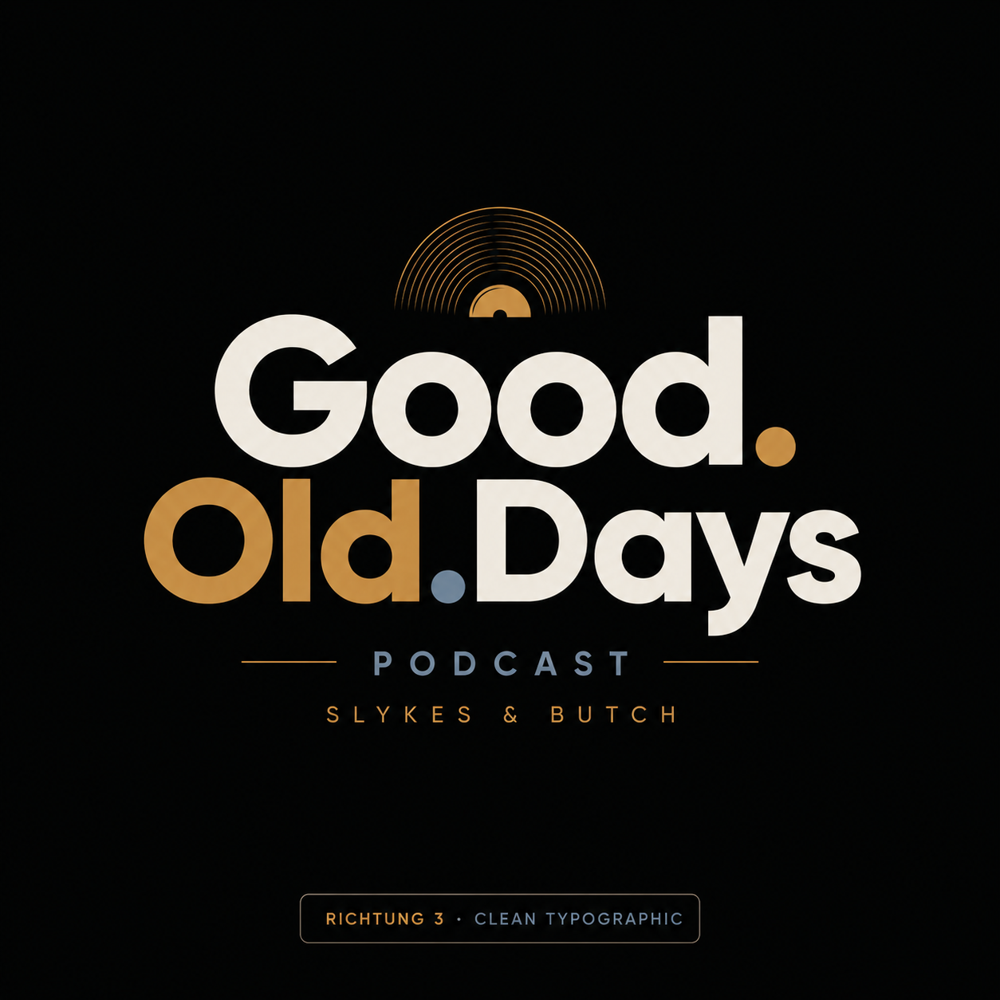

2005
Foxtrot Uniform Charlie Kilo
Bloodhound Gang – ein Song, ein Jahr und fünf Behauptungen.
Im Player suchen

Längst vergessene, aber geile Songs. Dazu fünf Behauptungen über Jahr, Song oder Interpret – und die Frage: Wahr oder falsch?
Die komplette Podcast-Show und zusätzlich die passende Spotify-Playlist – beides direkt eingebettet.
Alle Folgen direkt auf eurer Website über den Spotify-Player.
Perfekt, wenn Besucher nicht nur den Podcast, sondern auch die Musik dazu hören sollen.
Das Kernformat eures Podcasts bekommt auf der Website seinen eigenen kleinen Mitmachmoment.
Diese Karten kannst du später mit euren Lieblingsfolgen oder aktuellen Songs verlinken.
Bloodhound Gang – ein Song, ein Jahr und fünf Behauptungen.
Im Player suchenUsher – zurück in eine Zeit zwischen Clubsound, Popkultur und Erinnerungen.
Im Player suchenEagles – Klassiker an, Erinnerungen an und ab ins jeweilige Erscheinungsjahr.
Im Player suchenGood.Old.Days ist der Podcast von Felix & Markus aka Slykes & Butch für Musikliebhaber und Freunde gepflegter – und manchmal stumpfsinniger – Unterhaltung. Ihr stellt euch gegenseitig längst vergessene Songs vor, nehmt das jeweilige Jahr auseinander und lasst den anderen bei fünf Behauptungen raten: wahr oder falsch?